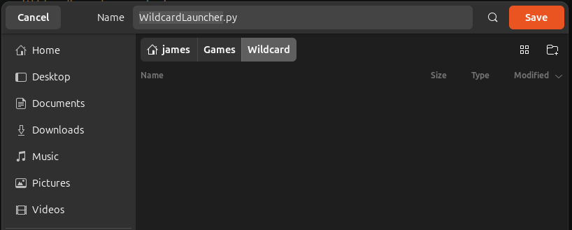
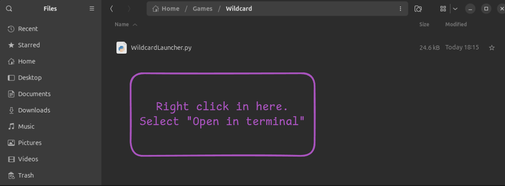
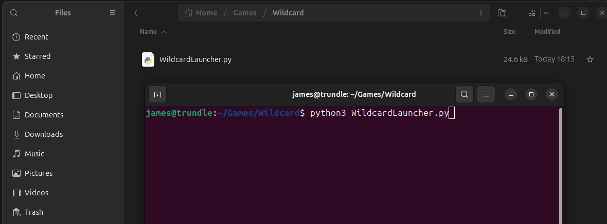
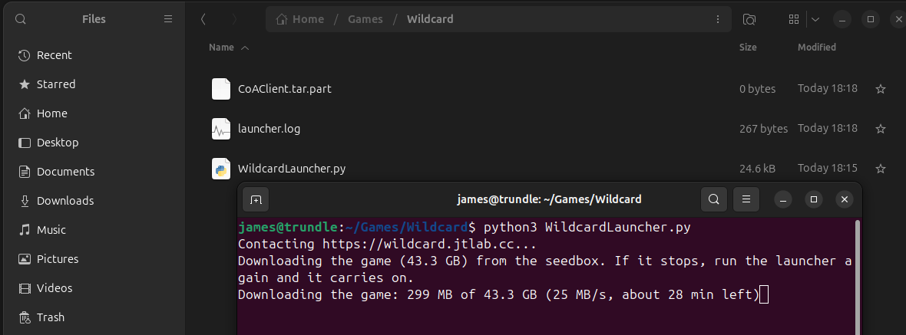
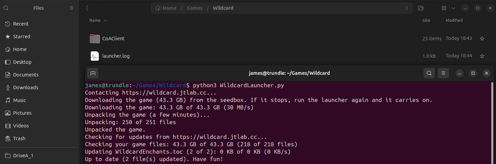
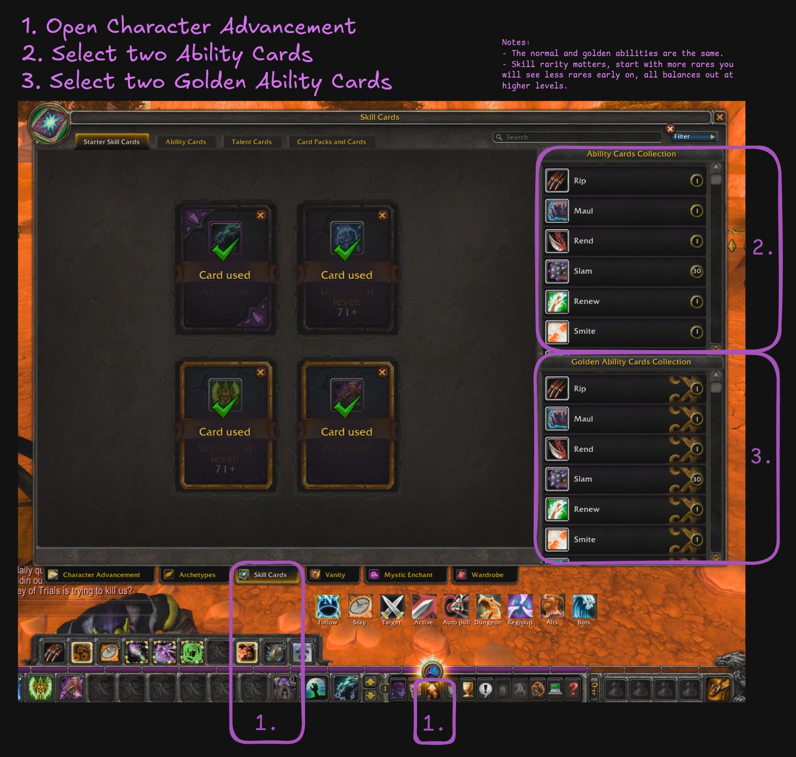

Wildcard is World of Warcraft without fixed classes. Instead of picking a Mage or a Warrior, your character builds
a kit from abilities drawn from all the classic classes: a Frost Nova next to a Divine Storm, a Rend next to a
Renew. Every character turns out different.
You get new abilities as you level, either by picking them from cards (below) or by rolling for them. On top of
that, Mystic Enchants change how your abilities work, so the same spell can play very differently
from one character to the next.
Getting started
Make an account at join.jtlab.cc with the invite code James gave you.
Download the launcher from the home page, unzip it into a folder with about 100 GB free, and
run Start Wildcard. The first run downloads the game.
Press Play, log in, and make a character. Race decides your looks and racial traits; your
abilities come from Wildcard.
Playing on Linux
The game runs well under Wine or Bottles. The Linux launcher does the same job as the Windows one from a terminal:
it downloads the game the first time, keeps it updated, points it at the server, and can start it for you. It
only needs Python 3, which every Linux desktop already has.
Make a folder with about 100 GB free, for example ~/Games/Wildcard, and save
WildcardLauncher.py into it.

Save it straight into your new Wildcard folder.
Open a terminal in that folder: in the file manager, right-click an empty space in the folder and choose
Open in Terminal.

Type python3 WildcardLauncher.py and press Enter.

The first time, it downloads and unpacks the game (about 45 GB). It shows how far along it is and roughly how
long is left. If it stops, run it again and it carries on.

Downloading. Leave the terminal open until it finishes.
Then it unpacks the game, checks every file and fetches any updates. When it says Up to date,
the game is ready.

Done: the CoAClient folder now holds the game.
Tell it once how you start Windows games. {exe} stands for the game's Ascension.exe:
Steam (Proton), the easiest: close Steam, then run python3 WildcardLauncher.py --add-to-steam.
It adds Wildcard to your Steam library, sets it to Proton Experimental, and makes --play start it
through Steam. Your Steam settings are backed up first (*.wildcard-backup).
Bottles (Flatpak), with a bottle called CoA: python3 WildcardLauncher.py --set-play "flatpak run
--command=bottles-cli com.usebottles.bottles run -b CoA -e {exe}"
From then on, python3 WildcardLauncher.py --play updates the game and starts it.
Adding it to Steam by hand
If --add-to-steam can't find your Steam, do it in Steam itself:
Add a Game, Add a Non-Steam Game, and pick CoAClient/Ascension.exe.
Right-click it, Properties, Compatibility: tick Force the use of a specific
Steam Play compatibility tool and choose Proton Experimental.
Right-click it, Manage, Add desktop shortcut. Open that shortcut file in a text
editor and copy the steam://rungameid/... link.
Run python3 WildcardLauncher.py --set-play "steam steam://rungameid/THE-NUMBER" (Flatpak Steam:
"flatpak run com.valvesoftware.Steam steam://rungameid/THE-NUMBER").
Already have the game in a Bottles or Wine folder? Put the launcher next to that CoAClient
folder instead and it just keeps it updated. It updates itself too. If something goes wrong,
launcher.log in the same folder shows what happened; send it to James.
Choosing your starting abilities
You don't have to leave your first abilities to chance. New characters get starter skill cards,
which let you pick abilities yourself:
Open Character Advancement (the button on your action bar) and go to the
Skill Cards tab.
Under Ability Cards Collection, pick two abilities for your two normal card slots.
Under Golden Ability Cards Collection, pick two more for your two golden slots.
Worth knowing
Normal and golden abilities are the same abilities; golden is just a second set of slots.
Rarity matters. If you start with more rare abilities, you'll see fewer rares come up early on. It all
evens out at higher levels.

Character Advancement, Skill Cards tab: pick two Ability Cards (2) and two Golden Ability Cards (3).
Swapping abilities later
Got an ability you don't like? On this server, Scrolls of Fortune are free and unlimited. Get them
from Pete Arr, who stands beside Silas Darkmoon in Stormwind and Orgrimmar, and use them to
reroll abilities until your kit feels right.
Mystic Enchants
Mystic Enchants are passive bonuses that change your abilities: extra effects, faster casts, new procs.
They come on Mystic scrolls.
Mobs level 11 and up drop an Unidentified Mystic Scroll about 1 kill in 25. Right-click it
to reveal which enchant it is. Mobs level 10 and under never drop them, so don't worry if you see none in the
starting zones.
Every dungeon boss drops at least one (one per 10 boss levels).
Use the Mystic Enchant tab in Character Advancement to see and apply the enchants you've
collected.
Some enchants only do something if you have the ability they improve. A red enchant line on an item
or scroll usually means you don't have that ability yet.
Challenges
Challenges (also called trials) are optional rule sets you can level under for rewards and bragging rights:
think hardcore rules, a limited number of lives, or survival mechanics like hunger, thirst and fatigue. Each
challenge shows its rules, its lives and its rewards before you start it.
How they work here
Start early. Most challenges are meant to be taken from level 1, and some have conditions
you have to meet when you start.
Changed your mind? You can cancel a challenge for free as long as nothing has happened yet:
no progress, no deaths, no broken rules. After that, cancelling counts as failing it.
Grouping: you can only group with players on the same challenge.
Finishing: reach the level cap with the challenge's goals met and it completes on its own.
Rewards arrive by mail.
Failing is permanent. Break a rule or run out of lives and the challenge fails.
On this server, a character that has failed a challenge can't start any other challenge either.
If you want to try again, make a new character.
Bots, chat and restarts
The world is full of bots: characters run by the server that quest, level near you, fill the
cities and chat. Some of the chat is written by AI, so expect old-school banter.
Mobs respawn in about a minute and a half, and herbs and ore in about two, so you can farm without waiting around.
The server restarts every night at 4:00 am (Sydney time). Warnings start in chat at 3:30, and
it's back within 10 minutes. Changes from the day go live then; see the home page for what's new.
Something not working? The launcher's Log button shows what happened; send that and a
screenshot to James.